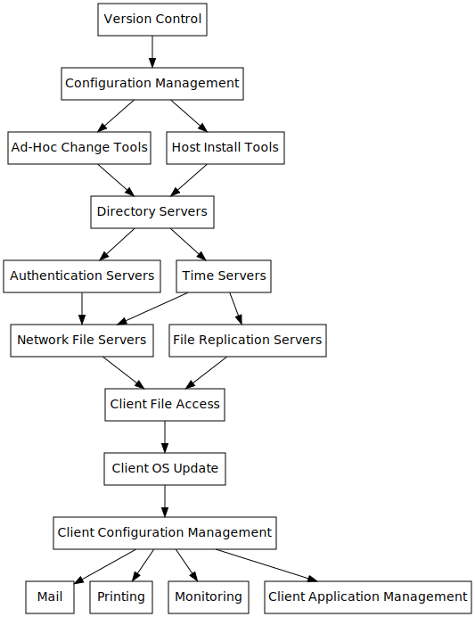

Overview
Create an infrastructure with an emphasis on security, resiliency and ease of maintenance.
End Goal
Produce a working implementation of a secure, resilient and easy to maintain infrastructure. This will be published in the form of version-controlled configuration documents, with the philosophy and background of the chosen configuration documented here. Anyone should be able to download the base operating system, and the configuration documents should convert that base OS into the desired state.
The documentation on this site is split into two sections, Design and Implementation. The Design documents what the infrastructure should look like in high level terms while never actually stating particular tools. The Implementation is a working version that follows the design.
A secondary objective is to allow users to choose which software to use by having each component of the infrastructure being modular and interchangable. So while a particular tool may be used for a given task, the implementation should be seen as guidance only of what can be achieved using the design.
Background
The intent is for the infrastructure to work regardless of participating in the wider internet. The design is aimed at organisations that have strict security and uptime requirements (government/critical physical infrastructure), although there is nothing preventing other organisations from adopting this design and/or changing it to suit them.
Organisations would likely still use the existing internet infrastructure in order to connect between their sites, however, there is the option to not be dependent on the third-party PKI and DNS systems. By removing the dependencies between organisations, there is greater decentralisation which allows more freedom.
High-Level Design
type: index title: "Design" date: 2018-03-14T21:47:09Z draft: false
IPv6
IPv6 is the latest version of the IP protocol, which offers significant advantages over IPv4.
IPv6 uses a 128-bit address which allows a much larger address space, 2^128. A single /64 subnet has a size of 2^64 addresses which equates to the square of the entire IPv4 address space. An address is represented as eight groups of four hexadecimal digits with the groups separated by colons, e.g. 2001:0db8:0000:0042:0000:8a2e:0370:7334. Guidance for representing IPv6 addresses in text is shown in RFC5952.
IPv6 addresses can be assigned in two ways, stateful or stateless, via Stateless Address Autoconfiguration (SLAAC) and/or DHCPv6. The stateless approach is used when a site is not particularly concerned with the addresses hosts use, whereas stateful DHCPv6 is used when a site requires tighter control over addresses. Both SLAAC and DHCPv6 may be used simultaneously.
Address Autoconfiguration (SLAAC)
The autoconfiguration process includes generating a link-local address, generating global addresses via stateless address autoconfiguration, and the Duplicate Address Detection procedure to verify the uniqueness of the addresses on a link. The IPv6 stateless autoconfiguration mechanism requires no manual configuration of hosts, minimal configuration of routers, and no additional servers. The stateless mechanism allows a host to generate its own addresses using a combination of locally available information and information advertised by routers. Routers advertise prefixes that identify the subnet(s) associated with a link, while hosts generate an "interface identifier" that uniquely identifies an interface on a subnet. An address is formed by combining the two. In the absence of routers, a host can only generate link-local addresses. However, link-local addresses are sufficient for allowing communication among nodes attached to the same link.
IPv6 nodes on the same link use the Neighbor Discovery protocol to discover each others presence, to determine each others link-layer addresses, to find routers, and to maintain reachability information about the paths to active neighbors.
All interfaces of IPv6 hosts require a link-local address, which is derived from the MAC address of the interface and the prefix fe80::/10. The address space is filled with prefix bits left-justified to the most-significant bit, and filling the MAC address in EUI-64 format into the least-significant bits. Any remaining bits between the two parts are set to zero.
- The left-most 'prefix length' bits of the address are those of the link-local prefix
- The bits in the address to the right of the link-local prefix are set to all zeroes
- If the length of the interface identifier is Nbits, the right-most N bits of the address are replaced by the interface identifier
Global addresses are formed by appending an interface identifier to a prefix of appropriate length. Prefixes are obtained from Prefix Information options contained in Router Advertisements. RA's are sent periodically to the all-nodes multicast address. To obtain an advertisement quickly, a host send out Router Solicitations as described in RFC4861.
- Routers advertise prefixes that identify the subnet(s) associated with a link
- Hosts generate an interface identifier that uniquely identifies an interface on a subnet
The Neighbor Discovery Protocol (NDP) is used by nodes to determine the link-layer addresses for neighbors known to reside on the same attached link, to find neighboring routers to forward packets, and to keep track of neighbors that are reachable or not.
The IPv6 router will be allocated a subnet by the ISP and configured with the first 64 bits of the 128-bit address. Duplicate Address Detection and Neighbor Unreachability Detection serve as error handling for the address autoconfiguration.
Since the IPv6 addresses are generated from the prefix on the router, it is possible to renumber an entire network by changing the prefix on the router.
IPv6 address are mapped to hostnames in DNS using AAAA resource records. Reverse resolution uses the ip6.arpa domain.
SEND
The SEcure Neighbor Discovery (SEND) protocol is designed to counter threats to the Neighbor Discovery Protocol (NDP) used by IPv6 to discover the presence of nodes on the same link and to find routers. SEND does not apply to addresses generated by SLAAC.
Components of SEND:
- Certification paths are expected to certify the authority of routers. A host must be configured with a trust anchor to which the router has a certification path before the host can adopt the router as its default router.
- Cryptographically Generated Addresses are used to make sure that the sender of a Neighbor Discovery message is the owner of the claimed address.
- Timestamp and Nonce options are used to provide replay protection.
The deployment model for trust anchors can be either a globally rooted public key infrastructure, or a local decentralised deployment similar to that used for TLS. At the moment, a global root does not exist and so cannot be used. In the decentralised model, a public key can be published by the end hosts own organisation. In a roaming environment, multiple trusted public keys can be configured. Also, a SEND node can fall back to the use of a non-SEND router.
By default, a SEND-enabled node should use only CGAs for its own addresses. Cryptographically Generated Addresses (CGA) are IPv6 addresses for which the interface identifier is generated by computing a cryptographic one-way hash function from a public key and other parameters. The binding between the public key and the address can be verified by re-computing the hash value and by comparing the hash value with the interface identifier. Messages from an IPv6 address can be protected by attaching the public key and parameters and then signing the message with the corresponding private key.
The purpose of CGAs is to prevent stealing and spoofing of existing IPv6 addresses. The public key of the address owner is bound cryptographically to the address. The address owner can use the corresponding private key to assert its ownership and to sign SEND messages sent from the address. An attacker can create a new address from an arbitrary subnet prefix and a public key because CGAs are not certified. Hwoever, the attacker cannot impersonate somebody else's address.
SEND SAVI
The SEcure Neighbor Discovery (SEND) Source Address Validation Improvement (SAVI) is a mechanism to provide source address validation using the SEND protocol. SEND SAVI uses the Duplicate Address Detection and Neighbor Unreachability messages to validate the address ownership claim of a node. Using the information contained in these messages, host IPv6 addresses are associated to switch ports, so that data packets will be validated by checking for consistency in this binding. In addition, SEND SAVI prevents hosts from generating packets containing off-link IPv6 source addresses.
SEND SAVI is limited to links and prefixes in which every IPv6 host and router uses the SEND protocol to protect the exchange of Neighbor Discovery information.
DHCPv6
DHCPv6 is the stateful counterpart to SLAAC. DHCPv6 enables DHCP servers to pass IPv6 network information to IPv6 nodes, such as addresses and configuration information carried in options.
Clients transmit and receive DHCP messages over UDP using the autogenerated link-local address.
IPsec
IPsec documentation seems a little sparse...
FreeBSD has the IPsec kernel modules built into the kernel as of 11.0, but the documentation hasn't been updated. Very little info is found online.
StrongSWAN seems to be more popular.
- USE WIREGUARD INSTEAD*
Version Control
Version control software is used to track changes to OS configuration files, OS and application binaries/source code and configuration management tool files over time. The changes to these files are timestamped, authored and a specific set of changes exists in an atomic transaction. By tracking these changes we can audit the entire history of the codebase and revert to previous versions if necessary.
While third party hosted services are available, these options are unavailable to an infrastructure with limited internet access. There should also be no need for a dependency on third party infrastructure. In addition, it is often the case that company-confidential data is stored in version control, and the organisation should be encouraged to use version control as much as possible and this is a barrier.
Version control tools tend to be one of two models: centralised and decentralised. A centralised keeps one copy of the versioned code and admins will pull down a working copy of specific files to work on. The changes are then checked back in. With a DVCS the entire repository and its history are downloaded at once, worked on then the changes are checked in to some agreed upon location for collaboration.
Version control should be used to manage only one machine in each distinct infrastructure, the infrastructure master (puppet master, salt master, chef server etc.). Changes to any other machine in the infrastructure would be done from this server.
Many tools depend on version controlled files and need to be notified when changes occur. They may do this by polling the repository for changes, using post-commit scripts or augmented by continuous integration tools.
Configuration Management
By using configuration management tools, we can codify our infrastructure which allows us to follow the same deployment pipeline as the applications we host, are able to perform disaster recovery quicker and have a history of the changes to the infrastructure.
All changes to the infrastructure should be performed by the configuration management tools with the changed files being stored in version control.
Configuration management tools would be used to manage both server provisioning and the configuration. Some configuration management tools can perform both roles which is preferable.
Also, the server provisioning process is only for applying the base files onto a machine. It is likely that the newly provisioned server will need software installed in order to communicate with version control and configuration management servers. It is useful to include a step in the provisioning process to install this needed software, and also to pre-seed any authentication keys required to secure the connection between the provisioned server and any infrastucture masters.
There are multiple facets to configuration management tools. First is in keeping the configuration of a node in sync. This is integral to a congruent infrastructure, in that the desired state and actual state are aligned. Second is orchestration. There isn't an easy way of describing for a server to be patched as a static state, except in an immutable infrastructure. So you need to be able to perform ad-hoc changes to the infrastructure in a way that is similar to normal configuration management tools. Thirdly, is event driven architecture by responding to events that happen. The IP of a node may change when it reboots, so its corresponding resource records in DNS need updating. The event triggers the requisite orchestration tools to run which would update the records on the DNS servers.
OS
The general server design would be a generic NanoBSD image occupying a flash device such as SD card serving as the operating system. Physical drives (either spinning disk or SSD) will be formatted with ZFS, on top of which the base for the jails will reside. Data used by the applications such as databases are stored on discrete storage appliances.
Instead of the architecture described above, it would be preferred to use ZFS boot environments.
Similarly, one of the features in the upcoming 12.0 release is PkgBase, where all of the base / kernel files are stored in packages managed by the pkg tool. This will be an improvement over the current management of the base system via freebsd-update. It will also mean that the base system can be streamlined to only include the packages you desire or are necessary on the hardware available. Along with ZFS boot environments, we can produce an immutable image similar to how NanoBSD works.
FreeBSD
FreeBSD was chosen as the operating system due to the benefits of NanoBSD, Jails and ZFS. However, the tools and configurations are platform agnostic, and can be ported to other Unix-like operating systems.
ZFS Boot Environments
With a standard zfs on root set up, you have one zpool with all the mount points on a ZFS dataset within the pool. With ZFS boot environments, you have a zpool with one or more ZFS datasets, where each dataset contains the whole kernel+base. The bootfs value of the zpool can be changed between the different ZFS datasets to change which is booted into.
Each boot environment contains all of its packages and configuration. To upgrade a server, you would create a new ZFS BE and apply the updated kernel / base packages to it. Then you could use ZFS send / recv to distribute the ZFS BE to other servers. In this way you only ever need to download the updates once.
Once the BE is created and distributed, you would still need to apply the final configuration with your configuration management tools. It just makes updating the OS and applying security patches much easier.
Jails
- A process and all descendants are restricted to a chrooted directory tree
- Does not rely on virtualisation, so performance penalty is mitigated
- Easy to update or upgrade individual jails
Jail parameters (jail.conf)
- path - Directory which is the root of the jail
- vnet - jail has its own virtual network stack with interfaces, addresses, routing table etc. - !! - Is this required to allow applications access to the network?
- persist - allows a jail to exist without any processes, so it won't be removed when stopped.
- allow.mount - allow users in jail to mount jail-friendly filesystems. May be required for NFS / home directory mounts?
- exec.prestart - commands to run in the system environment before a jail is created
- exec.start - commands to run in the jail environment when a jail is created
- exec.poststart - commands to run in the system environment after a jail is created, and after any exec.start commands have completed
- exec.prestop - commands to run in the system environment before a jail is removed
- exec.stop - commands to run in the jail environment before a jail is removed, and after any exec.prestop commands have completed
- exec.poststop - commands to run in the system environment after a jail is removed
- ip_hostname - resolve the host.hostname parameter and add all IP addresses returned by the resolver to the list of addresses for this jail. - !! - Basically, rather than manually setting IP addresses, this setting means the IP is pulled from DNS (which is secured by DNSSEC). This introduces a bootstrap problem though, how do the DNS servers get IP addresses in the first place? (link-local addresses?)
- mount or mount.fstab - filesystems to mount before creating the jail
- depend - specify jails that this jail depends on. When this jail is to be created, any jails it depends on must already exist, otherwise they are created automatically up to the completion of the last exec.poststart command.
Configuring the jail:
-
Setup /etc/resolv.conf so that name resolution works
-
Run newaliases to stop sendmail warnings
-
Set the root password
-
Set the timezone
-
Add accounts for users
-
Install packages
-
Setup bindings to other services (or get them from SRV records in DNS?)
-
Setup SSH to jail environment, configure sshd_config
ZFS
- Data integrity using checksums
- Pooled storage, where all disks added to the pool are available to all filesystems
- High performance with multiple caching mechanisms
- Snapshots
A storage pool is a collection of devices that provides physical storage and data replication for ZFS datasets. All datasets within a storage pool share the same space.
Virtual Device (vdevs)
A virtual device or vdev is a device or collection of devices organised into groups:
- Disk - A block device, under /dev.
- File - A regular file
- Mirror - A mirror of two or more devices.
- raidz - Data and parity is striped across all disks within a raidz group.
- Spare - A special psuedo-vdev which keeps track of available hot spares in a pool.
- Log - A separate-intent log device.
- Cache - A device used to cache storage pool data.
ZFS allows devices to be associated with pools as hot spares. These devices are not actively used in the pool, but when an active device fails, it is automatically replaced by a hot spare.
There are zfs datasets in a zfs storage pool:
- File system - Can be mounted within the standard system namespace and behaves like other file systems.
- Volume - A logical volume exported as a raw or block device.
- Snapshot - A read-only version of a file system or volume at a given point in time, filesystem@name or volume@name
Snapshots can be created quickly, and initially do not consume any additional space. As data in the active dataset changes, the snapshot consumes data. Snapshots of volumes can be cloned or rolled back, but cannot be access independently. File system snapshots can be access under the .zfs/snapshot directory in the root of the file system.
A clone is a writable volume or file system whose initial contents are the same as another dataset. Clones can only be created from a snapshot. When a snapshot is cloned, it creates a dependency between the parent and child, and the original cannot be destroyed as long as the clone exists. The clone can be promoted, which then allows the original to be destroyed.
ZFS automatically manages mounting and unmounting file systems without the need to edit the /etc/fstab file. All automatically managed file systems are mounted by ZFS at boot time.
A zfs dataset can be attached to a jail. A dataset cannot be attached to one jail and the children of the same dataset to other jails.
Host Install Tools
Ad-Hoc Change Tools
rsync. zfs send/receive.
Ad-hoc changes should never need to happen, but realistically, they are sometimes required. In order to facilitate ad-hoc changes, the administrators should have the ability to connect to the servers to perform changes. This should be done using the same SSH infrastructure as that used by the other applications, with the exception that the administrators would need to initially connect to a bastion host first. This includes SSH key rotation, validation of host keys using SSHFP records and having dedicated user accounts on each of the servers.
DNS
DNS is required to provide hostname to IP mapping. Querying the DNS for the IP address is a mechanism employed by almost all applications, therefore it is imperative that it is secured correctly.
In addition, a high emphasis on DNS security is required given that other security protocols are dependant upon it. For example, when a client connects to a server using SSH and the public key of the server is not known to the client, a fingerprint of the key is presented to the user for verification. This fingerprint can be stored in the DNS using SSHFP records so that the fingerprint can be verified out-of-band. TLS, which is commonly used for securing websites, can also use the DNS by storing certificates using TLSA records with DANE.
This also means that whatever method that is used to secure DNS must be verified to be secure since the DNS is considered authoritative for the security of the domain. So in DNSSEC, the security of the domain is only as secure as the KSK, so it should be stored in a HSM.
DNSSEC
DNSSEC creates a secure domain name system by adding cryptographic signatures to existing DNS records. These digital signatures are stored in DNS name servers alongside other record types like AAAA, MX etc. By checking the associated signature, you can verify that a DNS record comes from its authoritative name server and hasn't been altered. DNSSEC uses public key cryptography to sign and authenticate DNS resource record sets (RRsets). When requesting a DNS record, you can verify it comes from its authoritative name server and wasn't altered en-route by verifying its signature.
New DNS record types were added to support DNSSEC:
- DNSKEY - A zone signs its authoritative RRsets by using a private key and stores the corresponding public key in a DNSKEY RR. A resolver can then use the public key to validate signatures covering the RRsets in the zone, and authenticate them.
- RRSIG - Digital signatures are stored in RRSIG resource records and are used in the DNSSEC authentication process. A validator can use these RRSIG RRs to authenticate RRsets from the zone. A RRSIG record contains the signature for a RRset with a particular name, class, and type. The RRSIG RR specifies a validity interval for the signature and uses the Algorithm, the Signer's Name and the Key Tag to identify the DNSKEY RR containing the public key that a validator can use to verify the signature.
- NSEC and NSEC3 - The NSEC resource record lists two separate things: the next owner name that contains authoritative data or a delegation point NS RRset, and the set of RR types present at the NSEC RR's owner name. The complete set of NSEC RR's in a zone indicates which authoritative RRsets exist in a zone and also form a chain of authoritative owner names in the zone. This information is used to provide authenticated denial of existence for DNS data. To provide protection against zone enumeration, the owner names used in the NSEC3 RR are cryptographic hashes of the original owner name prepended as a single label to the name of the zone. The NSEC3 RR indicates which hash function is used to construct the hash, which salt is used, and how many iterations of the hash function are performed over the original owner name.
- DS - The DS resource record refers to a DNSKEY RR and is used in the DNS DNSKEY authentication process. A DS RR referes to a DNSKEY RR by storing the key tag, algorithm number, and a digest of the DNSKEY RR. By authenticating the DS record, a resolver can authenticate the DNSKEY RR to which the DS record points. The DS RR and its corresponding DNSKEY RR have the same owner name, but they are stored in different locations. The DS RR appears only on the upper (parental) side of a delegation. The corresponding DNSKEY RR is stored in the child zone. This simplifies DNS zone management and zone signing but introduces processing requirements for the DS RR, which can be solved using the CDS RR.
- CDNSKEY and CDS - The CDS and CDNSKEY resource records are published in the Child zone and give the Child control of what is published for it in the parental zone. The CDS/CDNSKEY RRset expresses what the Child would like the DS RRset to look like after the change using the CDS RR, or the DNSKEY RRset with the CDNSKEY RR.
Resource records of the same type are grouped together into a resource record set or RRset. The RRset is then digitally signed, rather than individual DNS records.

The RRset is digitally signed by the private part of the zone signing key pair (ZSK). The digital signature is then stored in a RRSIG record. This proves that the data in the RRset originates from the zone.

The signature can be verified by recording the public part of the zone signing key pair in a DNSKEY record. The RRset, RRSIG and DNSKEY (public ZSK) can then be used by a resolver to validate the response from a name server.

The DNSKEY records containing the public zone signing keys are then organised into a RRset, and signed by the Key Signing Key (KSK), which is stored in a DNSKEY record as well. This creates a RRSIG for the DNSKEY RRset.

The private key signing key signs a zone signing key which in turn will sign other zone data. The public key signing key is also signed by the private key signing key. The public KSK can then be used to validate the public ZSK.

The DS RRset resides at a delegation point in a parent zone and indicates the public keys corresponding to the private keys used to self-sign the DNSKEY RRset at the delegated child zones apex. The public KSK in the child zone is hashed and stored in a DS record in the parent zone.

Each time the child zone changes its KSK, the new public KSK needs to be transmitted to the parent zone in order to be stored in its DS record. In most cases this is a manual process, however, this can be mitigated by used CDS/CDNSKEY records. A CDS/CDNSKEY record contains the new information that the child zone would like to be published in the parent zone. These records only exist when the child zone wishes for the DS record in the parent zone to be changed. The parent zone should periodically check the child zone for the existence of CDS/CDNSKEY records, or can be prompted to do so.

The above steps produce a trusted zone that connects to its parent, but the DS record in the parent zone also needs to be trusted. The signing process is repeated for the DS records in the DS RRset, and the process repeats up the parent zones in a chain up to the root zone.
There are now two scenarios:
- For public DNS servers, you are reliant on the trust given to the root zone owners that they have signed the root zone correctly and stored the private root signing key securely.
- For internal-only domains, the island of security approach means that the signed zone does not have an authentication chain to its parent.

DANE
DNS-Based Authentication of Named Entities or DANE allows certificates, used by TLS, to be bound to DNS names using DNSSEC. DANE allows you to authenticate the association of the server's certificate with the domain name without trusting an external certificate authority. Given that the DNS administrator is authoritative for the zone, it makes sense to allow the administrator to also be authoritative for the binding between the domain name and a certificate. This is done with DNS, and the security of the information is verified with DNSSEC.
DANE is implemented by placing TLSA records in the DNS.
TLS via DANE can be used to secure websites over HTTPS, email via the OpenPGP and S/MIME extensions, instant messaging (XMPP, IRC) and other applications via SRV records.
DANE for Email Security
Since SMTP was designed to be transmitted in plaintext, encryption in the form of STARTTLS or Opportunistic TLS was developed to secure email communication. However, it is known to be vulnerable to downgrade attacks, since the initial handshake occurs in plain text. An attacker could perform a man-in-the-middle attack by preventing the handshake from taking place and thus make it appear that TLS is unavailable, so clients revert to plain text.
The Electronic Frontier Foundation (EFF) has created a project called STARTTLS Everywhere in an effort to enforce TLS between popular email domains, with the help of Let's Encrypt to serve certificates.
However, this is only to serve as an intermediate solution until DNSSEC and DANE see widespread adoption.
Our implementation includes DNSSEC and DANE, and so email protection will be available. However, since the infrastructure is not designed to be publicly accessible, some unique challenges surrounding maintenance of the DNS and CA root domains require solutions and also how to securely send between organisations needs to be determined.
While DANE can be used to validate the connection between mail exchangers, the emails themselves are still unencrypted. S/MIME allows email messages to be encrypted. Combining DANE transport security with S/MIME encrypted messages allows secure email between organisations.
A guide to setting up DNSSEC+DANE to guarantee secure email between organisations is published by NIST. It shows the experiments carried out by Microsoft Corporation, NLnet Laboratories, Secure64, Internet Systems Consortium and Fraunhofer IAO, and includes the configuration required for their respective MUA, MTA and DNS services, including:
- Thunderbird
- Dovecot
- Postfix
- Outlook
- Exchange
- NSD
- Unbound
- OpenDNSSEC
- ISC BIND
- Secure Domain Name System Deployment Guide
- Trustworthy Email
DANE for Website Security
NTP
OpenNTPD
Application Servers
NGINX
NGINX Unit
Security and Crypto
TLS
SSH
The Secure Shell (SSH) protocol is used for secure remote login and tunneling other network services over an insecure network. SSH consists of three main components:
- Transport Layer Protocol - Provides server authentication, confidentiality, and integrity with perfect forward secrecy. The transport layer will typically be run over a TCP/IP connection.
- User Authentication Protocol - Authenticates the client to the server. It runs over the transport layer protocol.
- Connection Protocol - Multiplexes the encrypted tunnel into several logical channels. It runs over the user authentication protocol.
There are two authentication processes that need to take place before a SSH connection is established, host key authentication and user authentication.
Each server must have a host key pair. The host keys are used during key exchange to verify that the client is talking to the correct server. The client must therefore have a way of validating that the host keys are correct.
The usual way that this is achieved is manually by an administrator logging into the server. The client manages a local database, in the form of a known_hosts file. While this allows a peer to peer architecture, it also requires updating the known_hosts file on every client whenever host keys are rotated. Each client becomes responsible for validating the servers that it connects to. This allows you to scale at the expense of increased manageability. This is not the preferred option because when you have a lot of servers it becomes very hard to manage the known_hosts files on every server.
The alternative and preferred option is to use SSHFP records stored in DNS, and secured with DNSSEC. The content of the public host key is used to generate a fingerprint in a specific layout which can then be stored in a specific type of DNS record called SSHFP or SSH FingerPrint. When the host key authentication takes place, the client checks DNS for the hostname of the server and will also check for the existence of a SSHFP record. If it exists, it will compare the fingerprint of the public host key provided by the server with the fingerprint of the SSHFP record. If they match the host key can be validated. We can be certain that the SSHFP record is correct because it is secured by DNSSEC. It is also much easier to manage because you only have to update the fingerprint of the host key in DNS once, then all clients can use it for validation.
The downside of this approach is that you need to have DNSSEC enabled servers. However, we are using DNSSEC throughout this infrastructure so it is not a problem.
SSHFP records consist of three properties:
-
Algorithm (4)
-
Fingerprint type (2)
-
Fingerprint in hexadecimal (4893752075487258092758094)
hostname.fqdn IN SSHFP 4 2 4893752075487258092758094
First connection
ssh obtains configuration data from sources in the following order:
- command-line options
- users configuration file (~/.ssh/ssh_config)
- system-wide configuration file (/etc/ssh/ssh_config)
The chosen options must also comply with the configurations specified in sshd_config on the receiving end.
The client sends its chosen algorithm details and key exchange method to the host. The host replies with its chosen algorithms. The two perform key exchange of the host keys. Once verified, the client sends the user authentication details. The host verifies these details. If verified, the host accepts the connection.
ssh_config
- Host - restrict the following options (up to the next Host or Match) to be only used for those hosts matching the pattern.
- AddressFamily inet6 - Use IPv6 only when connecting
- CanonicalizeHostname et al. - When an unqualified domain name is given as the SSH target, use the systems resolver to find the FQDN. The domain suffix is specified in CanonicalizeDomains. Can be set to strictly check so that if lookup fails within the specified domain, the SSH connection fails. This may be useful if unqualified names are used consistently, however, it adds another configuration file that is required to be maintained. !! Needs testing !!
- Ciphers chacha20-poly1305@openssh.com
- FingerprintHash sha256 - Prefer SHA256 over MD5 when displaying key fingerprints
- HashKnownHosts yes - SSH will hash host names and addresses when they are added to ~/.ssh/known_hosts. Hashed names can be used normally by SSH, but are unreadable to humans.
- HostKeyAlgorithms ssh-ed25519 - Prefer use of DJB's cipher.
- KexAlgorithms curve25519-sha256@libssh.org - Prefer use of DJB's cipher. Key Exchange Algorithms
sshd_config
- AddressFamily inet6 - Use IPv6 only when connecting
- Banner none - No banner message is displayed to the user before authentication.
- Ciphers chacha20-poly1305@openssh.com
- FingerprintHash sha256 - Prefer SHA256 over MD5 when displaying key fingerprints
- HostKey /etc/ssh/ssh_host_ed25519_key - Specifies the ed25519 host private key file.
- HostKeyAlgorithms ssh-ed25519 - Prefer use of DJB's cipher.
- KexAlgorithms curve25519-sha256@libssh.org - Prefer use of DJB's cipher. Key Exchange Algorithm.
- PasswordAuthentication no - Disable password authentication
- PermitRootLogin no - Do not allow root login over SSH
- PrintLastLog no - Disables printing the date and time of the last user login.
- PrintMotd no - Disables printing the /etc/motd when a user logs in.
- PubkeyAcceptedKeyTypes ssh-ed25519@openssh.com - Prefer use of DJB's cipher. Key types for public key authentication.
- PubkeyAuthentication yes - Use public key authentication
- UseDNS yes - Tells sshd to look up the remote host name and check that the resolved host name for the remote IP address maps back to the same IP address.
- StrictHostKeyChecking yes - SSH refuses to connect to a host if the host key fingerprint differs from the SSHFP record.
- VerifyHostKeyDNS yes - Specifies to verify the host key using DNS and SSHFP resource records. The client will implicitly trust keys that match a secure fingerprint from DNS.
HSM
Will a HSM really be used? Preferable for DNSSEC root keys
Passwords
TCP Wrapper
IDS
Firewalls
Configuration Management
Traditional system administration follows the "waterfall" method, where each step: gather requirements, design, implement, test, verify, deploy; is performed by a different team, and often conducted by hand. Each step or team has an end goal after which the product is handed over to the new team. The methodology documented in the papers at infrastructures.org, now referred to as DevOps, adds a layer of abstraction to the administration of services. By describing the infrastructure in structured configuration files, you leave the implementation up to the configuration management tool. So rather than specifying how to install a package for multiple operating systems, you say that you want the package installed, and leave the implementation up to the configuration management tool.
Also, the concept of idempotency is important. Rather than having a script that says "service $SERVICE start" which doesn't check if the service is already started, you instead say that you want a service to be in a started state. The configuration management tool then periodically checks the state of the service, and changes it to the desired state if necessary.
Features of this method include:
- Same Development and Operations toolchain
- Consistent software development life cycle
- Managed configuration and automation
- Infrastructure as code
- Automated provisioning and deployment
- Automated build and release
- Release packaging
- Abstracted administration
Continuous Delivery:
- The process for releasing/deploying must be repeatable and reliable
- Automate everything
- If something is difficult or painful, do it more often to improve and automate it
- Keep everything in source control
- "Done" means "released, working properly, in the hands of the end user"
- Build quality in
- Everybody has responsibility for the release process
- Improve continuously
Have buildbot create a new ZFS BE in response to the security notice email for a new release.
Authorisation / Access Control Lists
You can control access to objects using the ACL authorisation mechanism.
NFSv4 ACLs allow more fine grained control
Role-Based Access Control / Shared Administration (sudo)
RBAC
Maintaining the fine-grained control of files can be arduous and is difficult to maintain at scale.
One way to bring control over this is through role-based access control (RBAC). Instead of applying permissions to individual users and groups, you create roles which are applied to users and are collections of groups. A role might be HR staff, which have read/write access to the HR folder but only read to the Sales folder.
sudo
Access to the root account is restricted. Instead, sysadmins have a regular unix account which is given permission to perform administrative tasks with sudo.
Domain Naming Service
Directory Service (LDAP)
Time Service
Logging / Auditing
Logs should remain on the server itself for a defined period of time, or defined file size, whichever occurs sooner. The logs should be rotated to ensure that they do not fill the disk. Ideally the logs should be stored in a separate disk/filesystem so that if the logs do fill the disk its doesn't affect the rest of the system.
The logs should also be sent to some centralised place in the event that the server is tampered with or dies for whatever reason. The central logging server itself should also rotate logs and archive off old logs after a defined period of time.
RPC / Admin service
!!
Designing for Operations
Specific Operational Requirements
- Configuration
- Startup and shutdown
- Queue draining
- Software upgrades
- Backups and restores
- Redundancy
- Replicated databases
- Hot swaps
- Access controls and rate limits
- Monitoring
- Auditing
!!
Configuration
The configuration should be able to be backed up and restored. You should be able to view the difference between one version and the other. Archive the running configuration while the system is running. This is best done with text files, as they can be stored in existing version control systems
- NanoBSD, conf file - Jails, conf file - Kerberos - OpenDNSSEC - SoftHSM - NSD - Unbound - OpenLDAP - OpenNTP - OpenSSH - Configuration Management - NFS
Startup and shutdown
Enter drain mode; Stop the applications (optional); Stop the jails (which should have scripts to stop the apps); Shutdown. Startup, start the jails on boot, mount and filesystems in jails; run apps check before saying ready; Exit drain mode.
Queue draining
All requests are going through the load balancer, individual nodes can be put into drain mode.
Software upgrades
For app upgrades, snapshot current, update app, restart jail with new updated app jail. For OS upgrades, build new offline image, update slice 2, reboot.
Backups and restores
Config files / OS files / data files
How to backup and restore:
- Kerberos principals, groups etc. - LDAP data - DNS records/zones - HSM data
Calculate the latency/data limits required to perform above backups/restores
Redundancy
OS, hard drive, zfs. Services are behind a load balancer
Replicated databases
Hot swaps
Physical components should be hot swappable. Service components should also be hot swappable.
Access controls and rate limits
If a service provides an API, that API should include an Access Control List
Monitoring
Configuration management tools typically monitor the OS / Application code is correct. Use normal network monitoring tools to monitor up/down, latency etc... icinga tick stack
Auditing
Logging to central servers Auditd / openbsm
Unspecific Operational Requirements
User Access
- Documents
- Applications
- Instant Messaging
- Working remotely
type: index title: "Implementation" date: 2018-03-14T21:47:09Z draft: false
The architecture described in the design is only aimed at the infrastructure setup, not application servers. Each of the services provided can be accessed by other architectures based on different operating systems. So for example, Windows and Linux infrastructures would still be able to query the DNS service without any extra configuration.
StrictHostKeyChecking vs VerifyHostKeyDNS Problem:
Problem Statement
Do the StrictHostKeyChecking and VerifyHostKeyDNS options in ssh_config work together?
- StrictHostKeyChecking - If set to yes, ssh will never automatically add host keys to the known_hosts file and refuses to connect to hosts whose host key has changed(This is the preferred option). The host keys of known hosts will be verified automatically in all cases.
- VerifyHostKeyDNS - Specifies whether to verify the remote key using DNS and SSHFP resource records. If set to yes, the client implicitly trusts keys that match a secure fingerprint from DNS. Insecure fingerprints will be handled as if this option was set to ask. If this option is set to ask, information on fingerprint match will be displayed, but the user will still need to confirm new host keys according to the StrictHostKeyChecking option.
So if the fingerprint is presented from insecure DNS (not DNSSEC validated), or if the SSHFP record does not exist, does it prompt the user? We don't want this to happen since these SSH connections are happening autonomously.
Also need to check what happens if both options are set to yes.
So the host key is verified via DNS. If the fingerprint is correct it will connect. If it is incorrect, it will follow the StrictHostKeyChecking option, which when set to yes will refuse to connect to a host if its host key has changed.
If a host key is verified through DNS, is it still added to known_hosts? No, the host keys are only stored in the SSHFP records. This also means that when the host key is rotated, the SSHFP record needs to be updated once rather than having to amend the known_hosts file on every server that has ever connected.
SSH Host Key Rotation
How do you rotate SSH host keys and update the SSHFP records in DNS(SEC)?
Requirement for renewal is initiated every x days/weeks host generates new host keys host connects to control machine, provides the new SSHFP values and asks for hosts SSHFP records to be updated control machine updates DNS zone info with new SSHFP values if update is successful, remove old values and resign zone. Inform host to remove old host keys if update is unsuccessful, remove new values and report error.
Setting up IPsec Problem:
Problem Statement
How do we set up IPsec between the control machine and machines it creates?
How do we set up IPsec between the router and machines communicating with it?
How do we set up IPsec between the router and other sites?
Assigning IP addresses to jails
It is not possible to assign IP addresses to jails using DHCP, they can only be assigned via jail.conf. This introduces the issue that a human would be required to find out a free address and manually enter it into the jail.conf, which becomes additionally complex with long and hard to remember IPv6 addresses. Some of this problem can be mitigated using variables for example by having the subnet prefix as a $PREFIX variable which can then be referenced as e.g. $PREFIX::d3d8.
Another method available is the ip_hostname parameter in jail.conf which resolves the host.hostname parameters in DNS and all addresses returned by the resolver are added for the jail. So instead of entering the IP into jail.conf, a AAAA record would be manually entered into DNS and the jail would pick it up from there.
Since only applications that require an external IP address are hosted inside jails, those applications should have a known IP address. This would be services like DNS, which needs a static and human-known IP address. These IP addresses could be hard coded into the DNS record available at the temporary DNS server (unbound) hosted on the control machine which is available during initial bootstrapping. The jails would then use the ip_hostname parameter to lookup their hostname in DNS, from which they would assign the jails IP address. Subsequent hosts would generate their IP address via SLAAC and DNS would be updated via puppet as normal.
Giving DNS server information to clients
Rather than manually configuring /etc/resolv.conf for the location of the local DNS servers, this information can be provided either by the router or DHCP server. If you do not want to run a DHCP server and rely solely on SLAAC for address allocation, then you can have the router provide the DNS information. Otherwise, the DHCP server can provide the DNS information. RFC8106
The major benefit of this approach is that you do not have to make any manual configurations for the location of the DNS servers on any of your clients. However, one of the drawbacks is experienced during the initial bootstrap when the DNS servers do not yet exist. So the DNS servers will need to have their stub resolvers configured manually.
Since we have a robust DNSSEC implementation available, it makes sense to store as much crypto/public keys in there as possible rather than having them spread over multiple mechanisms. So rather than TLS certs in 3rd party PKI, SMIME certs in LDAP, SSH host keys in known_hosts files and IPsec public keys distributed manually, you can have TLSA, SMIMEA, SSHFP and IPSECKEY Resource Records stored securely in DNS.
It is also important for us to have this information in DNS so that it can potentially be referenced by other organisations. If another org needs to access a website, it needs to be secured with TLS which is validated by the TLSA record via DANE. Likewise, if a person in another organisation wants to send an email, they need to know the TLS cert to secure the TLS communication and also the SMIME certificate to encrypt the email itself. By publishing the TLSA record and SMIMEA records in DNS, the other organisation can access this information and be confident that the records are accurate.
IP addresses that need to be known by a human
- Router(s)
- Control Machine(s)
- DNS servers
Resource records to be stored in DNS(SEC):
Static:
- DNS servers
- Hostname to static IP for infrastructure servers
- CNAMES for standard services (auth.example.com, dns.example.com)
- MX records
Dynamic:
- Hostname to dynamic IP for app/other servers
- SSHFP records
- IPSECKEY records
- TLSA records (for all web/app servers)
- SMIMEA (for each user)
Ensure packages and services continue working after OS / package updates
It would be preferable to have updates to the OS and packages to be downloaded, tested, and applied automatically. Usually this is one of the tasks of systems administrators, and is often carried out at regular intervals and applying updates all at once. This also goes against the immutable infrastructure paradigm that is often employed in cloud infrastructures.
Using continuous integration tools and configuration management tools in parrallel will allow us to perform these actions autonomously.
Very often, you can subscribe to mailing lists which announce when OS or package updates are released. CI tools like Builtbot can listen for these emails, and run specific actions based on the content. For example, when new security updates for the kernel or base are released, an email would be sent and received by Buildbot which would then kick off the patching of servers in the test environment. Once tested and the applications are confirmed to be working ok, then the patches can be applied to other environments.
Likewise if a new major version is released, an email is received, Buildbot then runs through the process of creating a new zfs boot environment on servers in the test environment and applies the new major version to the new BE. After rebooting into the new environment, tests are performed to check that the application still works ok. If so, the major version is rolled out to other environments. This ties in with the need for redundancy, because we would need to take a server out from the load balancer to perform the upgrade and put it back once tested and working.
By creating infrastructure acceptance tests using tools like testinfra, we can easily validate that packages, services and configuration files continue to work in the same way before and after upgrades take place. It also gives us the opportunity to practice test-driven infrastructure, by first creating the test then the code to actually implement the change. These tests will also contribute to cross OS compatibility because the same tests can be run on different OSes.
Cross OS init/service compatibility
Init systems vary wildly across different operating systems. FreeBSD has a sane init system based on shell scripts that is incredibly easy to port to other OSes, but this is not true for systemd and the like. One option is to use daemontools by djb which has packages on most OSes and is designed specifically to be cross-OS compatible.
It can also use shell scripts, so it may be possible to just copy the FreeBSD service scripts and use them with daemontools but this needs testing.
Bootstrap
Version Control
There are a number of options including git and subversion. Choose the tool that is best suited to your organisation. git has been chosen as it is open source, familiar to most people and easy to pick up.
Since Git is a collaborative tool, it is common to install a web version of git such as GitLab or Gogs to give people a GUI. This is organisation specific, for our use case we will just have git repos stored on a specific server/storage area. All of the tools available to git are usable in the git package.
Modern configuration management systems have the ability to use git repositories as backends for their configuration files. This allows a workflow of only ever updating files that exist in version control which means changes are entered into history and can be audited.
git package installed /usr/local/git ? contains repos depends on ssh infrastructure separate user accounts are used for specific projects machines access these accounts with their specifically generated ssh key pair, with the public key put into the authorized keys of the user for the project
salt-repo authorized_keys: salt-master01 public key salt-master02 public key
hugo-repo authorized_keys: hugo-master01 public key hugo-master02 public key
These service account users have git-shell as their shell, which means they can only push/pull.
SSH
The default for HostKey is to accept RSA, DSA, ECDSA and ED25519 host keys. We only want to use ED25519, which can be enabled with: HostKey /etc/ssh/ssh_host_ed25519_key
We need to have the capability to rotate the host key. The old and new keys both need to be accepted until the new keys SSHFP resource record has been published into DNS.
So to rotate the host key:
- Generate a new host key
- Update the /etc/ssh/sshd_config file to specify the name of the new host key, while keeping the existing host key defined as well
- Calculate the SSHFP resource record of the new host key
- Update the zone file with the SSHFP record
- Resign the zone
- Publish the zone
- Update the /etc/ssh/sshd_config file to remove the old host key
The node itself should be responsible for generating the new host keys so that the private keys are not transported across the network. Using Saltstack's Event-Driven Infrastructure model we can detect when a new host key is generated and automatically perform the steps required to update the zone with the new SSHFP record.
The default for AuthorizedKeysFile is to use the .ssh/authorized_keys file in the users home directory. AuthorizedKeysFile .ssh/authorized_keys
Like host keys, user keys should be rotated regularly. For service accounts, the rotation can follow a similar process to host key rotation.
- Generate a new user key
- Update ssh_config to use the new key, while keeping the existing user key defined as well
- Grab the public key, and update the authorized_keys files on machines as necessary
- Once updated, update the ssh_config file to remove the old user key
We will keep this default, but the way that users connect may be slightly different than what is normally expected. For example, on a git server we may have a particular user account created to allow access to a repository. It is likely that this same repository would be accessed by many different machines to pull down their configuration. Rather than creating a separate user account per machine on the git server, we would create one account called git-repo or something, then the authorized_keys file for that user would contain the public keys of multiple machine users. So the master01 machine would have a git-repo user as well, but its SSH keys would be different to the git-repo users SSH keys on the master02 machine. But the public keys of the git-repo user of both master01 and master02 would exist in the authorized_keys file on the git server.
!! none of that makes sense and needs rewriting !!
It is a standard practice to use service accounts where an account is required to carry out a particular process with restricted permissions and without human intervention. One of the common issues however, is that often the amount of such accounts increases dramatically as every application and workflow requires a new service account. This quickly becomes unmanageable and you end up with lots of unused accounts that have access to many different things and no way of knowing what they are doing.
To combat this, we want to standardise the accounts as much as possible while also limiting access permissions and auditing actions that are taken.
For example, a common action is to pull and push code to remote git repositories. In order to do this, a user account with the correct SSH key pair needs to connect to the server hosting the repository and have access to the directories containing the repositories. Rather than having a specific account for each application or host and splitting up the permissions for push and pull, we can instead have one account 'git_remote' which is an account which exists on every server. Its home directory is /usr/local/git, and only this user can access it. The shell for the 'git_remote' user is set to 'git-shell' which allows git push and pull operations only.
Though the 'git_remote' account exists on every server the SSH key pair is unique per server. In order to allow a server to access a repo on another server, the public key of the 'git_remote' user can be added to the authorized_keys file of the 'git_remote' user on the machine hosting the repositories. So access control is maintained using normal SSH keys and there is a standard maintainable way of performing this common task that works in the same way across the whole infrastructure.
In addition, the SSH keys of the accounts can be rotated regularly as per normal.
Each of the components that are required to maintain this approach are simple and common:
- Managing standard Unix user accounts
- Managing directory permissions
- Managing SSH keys
- Managing authorized_keys files
machines access these accounts with their specifically generated ssh key pair, with the public key put into the authorized keys of the user for the project
salt-repo authorized_keys: salt-master01 public key salt-master02 public key
hugo-repo authorized_keys: hugo-master01 public key hugo-master02 public key
The SSH keys used by humans to directly connect to servers are harder to manage, since we would probably want the private keys to be encrypted and require a password or preferably include two-factor authentication as well. So its harder to automate the rotation. It may be best to instead have a MOTD that encourages the user to update their SSH key. It could give a time period that the user needs to have changed their keys by, and dynamically update the MOTD to say if the keys are "expired". If we were really strict, we could block log in at this point. However, the infrastructure is supposed to be hands-off and there should only be a requirement for a human to log into a server directly if things have gone wrong. So we dont really want to block human access.
Required SSH accounts / connections
- git pull/push - config management and application repos
- zfs send/recv - upgrading zfs boot environments. application deploys via zfs/jails
- human user accounts - human access to servers
Config files were based on https://wiki.mozilla.org/Security/Guidelines/OpenSSH
In FreeBSD, the sshd_config and ssh_config files are used to determine the behaviour of the ssh daemon and client respectively. By default, the options are declared in the file but are commented out so that it is easy to see what the default value of a particular option is. Uncommented options are then used to override behaviour.
For clarity, we can remove all of the commented lines in this file. Any lines that remain would then be only those options that override behaviours.
sshd_config
HostKey /etc/ssh/ssh_host_ed25519_key
KexAlgorithms curve25519-sha256@libssh.org
Ciphers chacha20-poly1305@openssh.com
AuthenticationMethods publickey
LogLevel VERBOSE
PermitRootLogin No
UsePrivilegeSeparation sandbox
There are some options that are currently not shown in the below ssh_config. These would include the IdentityFile option, to determine the key pair to be used with a specific account.
The below example would reside at /etc/ssh/ssh_config to set the standard default options, and the IdentityFile and any other user specific options would be specified in the users ~/.ssh/ssh_config file.
ssh_config
HashKnownHosts yes
HostKeyAlgorithms ssh-ed25519-cert-v01@openssh.com,ssh-ed25519
KexAlgorithms curve25519-sha256@libssh.org
Ciphers chacha20-poly1305@openssh.com
su -m git_remote -c 'ssh-keygen -t ed25519 -N "" -f /usr/local/git/.ssh/id_ed25519 -C git_remote@testjail1'
also need to disable interactive login as per man git-shell
Implementation
Throughout this design it assumed that the infrastructure is built on bare metal by default, though it is acceptable that multiple services may be running on the same physical host and segregated using jails or virtual machines. Cloud infrastructures are not considered because they are inherently hosted externally which is not possible in a secure environment.
Provisioning
IPv6
Address Autoconfiguration (SLAAC)
SEND
SEND SAVI
DHCPv6
IPsec
OS
FreeBSD
Jails
ZFS
https://www.freebsd.org/cgi/man.cgi?query=zfsd
zfsd will detect if a disk becomes degraded or unavailable and will automatically activate a hot spare if available.
Host Install Tools
Download the updates
More testing with pkgbase needs to be carried out, but ideally if it works, we could build a new zfs boot environment, install the requisite packages and boot into it.
While NanoBSD was considered in the past, zfs boot environments are now used.
With zfs boot environments, we can download the updated base files, create a new boot environment, start it in a jail, apply our configuration, test it, and then replicate the zfs dataset to other hosts using zfs send/recv over SSH. This gives us a reliable method of upgrading hosts and also minimises the amount of traffic over the internet. We would only need to download the base files once and then distrubute them locally rather than each host downloading updated versions.
Likewise, any packages that are required for our infrastructure to work should be download onto a local package mirror/cache. This means we can still function if the internet connection is unavailable and allows us to ensure we are using the latest versions of packages.
Until pkgbase becomes a reality, we can just download the images or kernel.txz/base.txz files from the freebsd ftp sites. One alternative is to download the source code via subversion, then compile it yourself. This takes about one and a half hours though. Security patches can be applied by downloading the patch, running the diff through patch and then recompiling. Again, compilation takes ages, so it would be better to just use the images or precompiled binaries.
Ad-Hoc Change Tools
Configuration Management
DNS
DNSSEC
DANE
DANE/SMIMEA for Email Security
S/MIME or PGP
Kerberos
NTP
NTPsec
App Deployment
Application Servers
NGINX
Security and Compliance
Security and Crypto
TLS
SSH
HSM
Passwords
Use one time passwords generator with pass
freebsd package is password-store
TCP Wrapper
TCP wrapper provides host access controls to inetd daemons. It should be used in conjunction with a firewall
IDS
mtree
Firewalls
Configuration Management Tools
Authorisation / Access Control Lists
Role-Based Access Control / Shared Administration (sudo)
Domain Naming Service
Directory Service (LDAP)
Time Service
Logging / Auditing
FreeBSD includes syslog in base. Newsyslog is the equivalent of logrotate, and is used to rotate logs.
/etc/newsyslog.conf
# logfilename [owner:group] mode count size when flags [/pid_file] [sig_num]
/path/logs/*.log 644 7 100 $D0 G
/path/logs/*/*.log 644 7 100 $D0 G
RPC / Admin service
Orchestration
Specific Operational Requirements
Configuration
Startup and shutdown
Queue draining
Software upgrades
Backups and restores
Redundancy
Replicated databases
Hot swaps
Access controls and rate limits
Monitoring
Auditing
Unspecific Operational Requirements
Assigning IPv6 Addresses to Clients
Static or Dynamic IPv6 Addresses (DHCPv6 or SLAAC)
IPv6 Security
Hostname Conventions
Choosing an Operating System
Choosing a Configuration Management Tool
Scheduling with cron
Scaling
User Access
Infrastructure Testing
To check that the infrastructure is working as desired a infra testing tool should be used in combination with the configuration management tool. You can use these to validate that the config management config has been applied correctly, to provide test cases to validate any updates to the infra code still work,
testinfra is being used because its based on python. Other tools are serverspec/inspec. They are based on ruby. I'm trying to stick to python because it is much more sane than ruby.
tests can be run with: py.test -v testinfra/ssh.py
Tests can be run from the salt master and use the salt API for running tests on minions. In this way we are not reliant on services like SSH which we cant guarantee will be working. If the salt connection is also down, either the server is off, removed or is otherwise unresponsive and requires admin intervention. Although it is more likely that you would be alerted to this by the monitoring infrastructure.
Alternatively the ssh transport can be used which uses the ssh command available on $PATH, which should be used by default.
Inferno
Firecracker microVMs + containers:
- Host - kernel + alpine base + hardening + jailer
- microVM - kernel + alpine base
- microVM runtime - kernel + alpine base + specific programming language
- microVM container - kernel + alpine base + docker
Networking
- SDN - Open vSwitch
- Host firewall
Storage
- LVM + Ext4
- Minio
Config
- Ansible?
- Use SSH
CI/CD
- Concourse?
- Buildbot?
Orchestrator like k8s, written in rust. Maybe use similar interface as fargate?